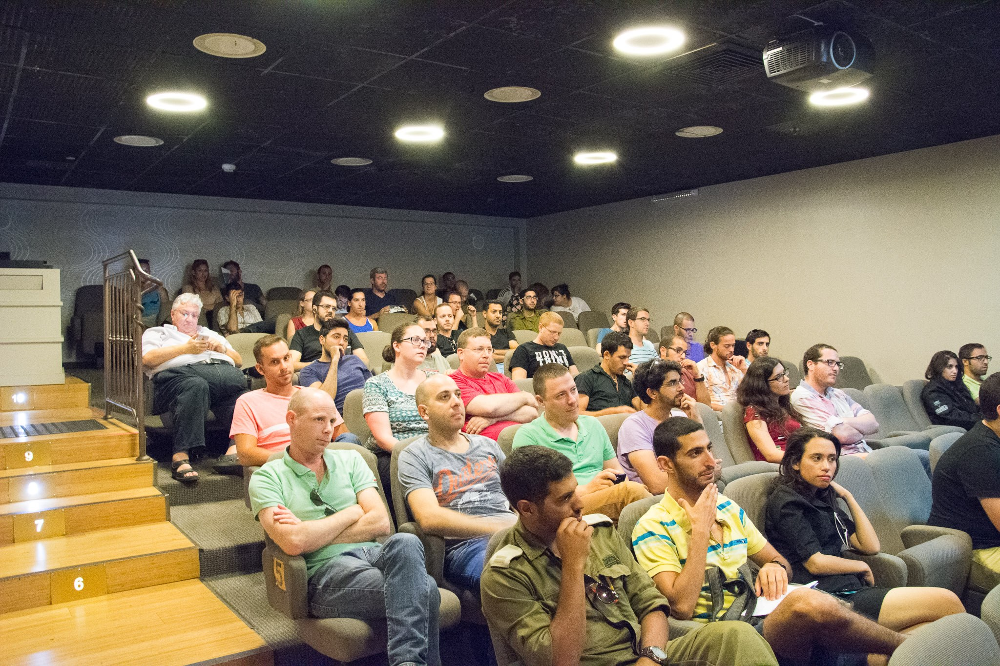

עמותת יוצאים לשינוי פועלת בעיקר במישורים הפוליטי והמשפטי בכדי ליצור תנאים שיקלו על יוצאים בשאלה מצד המדינה. הם אלו שרתמו את חברת הכנסת עדי קול מ"יש עתיד" לנושא הסיוע ליוצאים בשאלה.
העמותה שואפת שהמדינה תממן בגרויות גם ליוצאים בשאלה, בשונה מהמצב היום, בו חרדים מקבלים לימודים חינם ואף עם מלגות קיום, ואילו יוצאים בשאלה נדרשים לממן בעצמם את הלימודים.
העמותה אף הגישה תביעת נזיקין בבג"ץ נגד המדינה שקרויה בשם "תביעת הליבה" בשמם של עשרות יוצאים (גם אני חתום על התביעה), שנאלצו לשלם מכיסם עשרות אלפי שקלים על לימודי בגרות בשעה שזו חובתה של המדינה להעניק לכל ילד את החינוך וההשכלה הנדרשים לעולם העבודה המודרני. השאיפה היא כאמור להגיע לפשרה עם המדינה בה היא תתחייב לממן בגרויות ליוצאים בשאלה מכאן ואילך.
העמותה פועלת גם מול הצבא בכדי להסדיר את מעמדם של יוצאים בשאלה כחיילים בודדים, וכן פועלת ליצירת מסגרות אקדמיות יחודיות ליוצאים בשאלה במכללה הבינתחומית ובאוניברסיטה העברית.
העמותה אף יוזמת קורסים מקצועיים לרכישת מקצוע ליוצאים, ויוזמת כנסים וסמינרים בנושאי היציאה בשאלה ומנסה להציף את המודעות לנושא.
דף הפייסבוק של ארגון יוצאים לשינוי